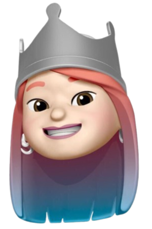

Jane Zhang
Computer science and cognitive science at Barnard, Columbia. Building AI video tools at Martini. Making films with AI.
So far
- 0–18
- Beijing
- Been to
- Taiwan, Japan, Korea, Singapore, Australia, Canada, UK, Dubai …
- 18–now
- New York
Built
Research
- Spatial cognition
- Does the language of direction change how we navigate?
Community
- SUAB
- President. 2,000 students in four countries, against campus bullying.
Elsewhere
- janezzz@stanford.edu
- GitHub
- jo1-yo
- Jane Zhang
However long it takes, I stay on the boat.